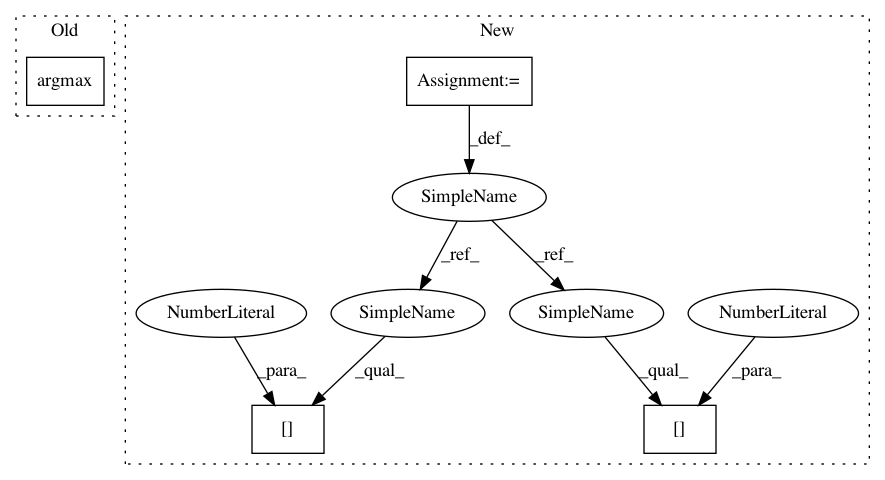

e81142f0869321cd8792e13bfc4f6fb85d9f1efc,libact/query_strategies/uncertainty_sampling.py,UncertaintySampling,make_query,#UncertaintySampling#,62
Before Change
prob = self.model.predict_real(X_pool)
min_margin = np.inf
for j in range(len(prob)):
m1_id = np.argmax(prob[j])
m2_id = np.argmax(np.delete(prob[j], m1_id))
margin = prob[j][m1_id] - prob[j][m2_id]
if margin < min_margin:
min_margin = margin
After Change
elif self.method == "sm": // smallest margin
dvalue = self.model.predict_real(X_pool)
if np.shape(dvalue)[1] == 2:
ind = [0, 1]
else:
// Find 2 largest decision values
ind = np.partition(-np.abs(dvalue), 2, axis=1)[:2]
margin = np.abs(np.abs(dvalue[:, ind[0]]) - np.abs(dvalue[:, ind[1]]))
ask_id = np.argmin(margin)
return unlabeled_entry_ids[ask_id]
In pattern: SUPERPATTERN
Frequency: 3
Non-data size: 4
Instances
Project Name: ntucllab/libact
Commit Name: e81142f0869321cd8792e13bfc4f6fb85d9f1efc
Time: 2015-12-22
Author: yangarbiter@gmail.com
File Name: libact/query_strategies/uncertainty_sampling.py
Class Name: UncertaintySampling
Method Name: make_query
Project Name: yahoo/TensorFlowOnSpark
Commit Name: 981e4266d4ea816b08a762193bd52f40cd1a3242
Time: 2019-08-07
Author: leewyang@verizonmedia.com
File Name: examples/mnist/keras/mnist_inference.py
Class Name:
Method Name: inference
Project Name: titu1994/DenseNet
Commit Name: 3a3dc678e50e60f9cf05e95e992ab873046c1b8f
Time: 2016-12-05
Author: titu1994@gmail.com
File Name: cifar10.py
Class Name:
Method Name:
Project Name: ntucllab/libact
Commit Name: e81142f0869321cd8792e13bfc4f6fb85d9f1efc
Time: 2015-12-22
Author: yangarbiter@gmail.com
File Name: libact/query_strategies/uncertainty_sampling.py
Class Name: UncertaintySampling
Method Name: make_query